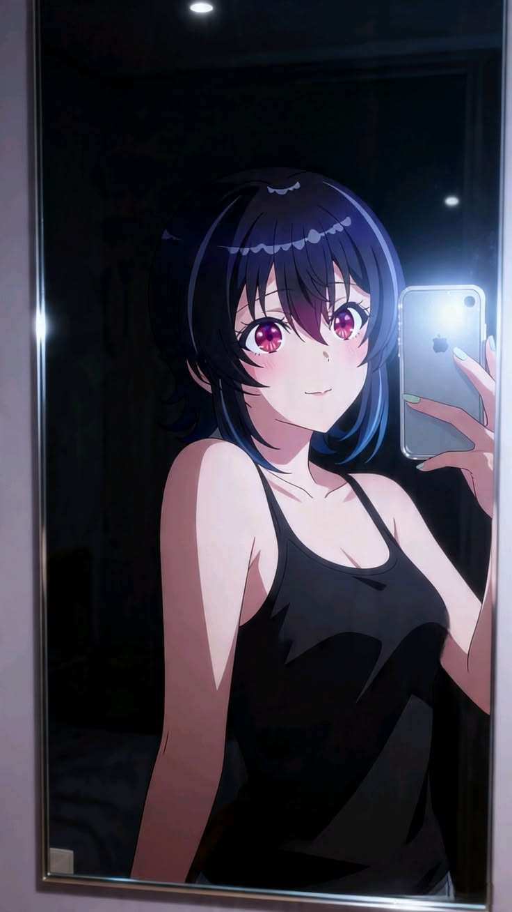

RUSH PROJECT
Choose a route to open a portfolio.
 Route A
Monic@
THE HOLY UNIX AND VN WEEB
Open chapter
Route A
Monic@
THE HOLY UNIX AND VN WEEB
Open chapter

Route B phuri__p MACBOOK STARTUP LARPER Open chapterNarrator
Two teammates. One rush. Choose whose story you want to read first.